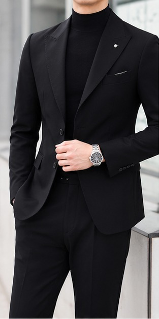
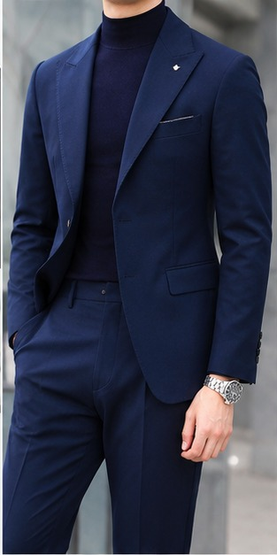
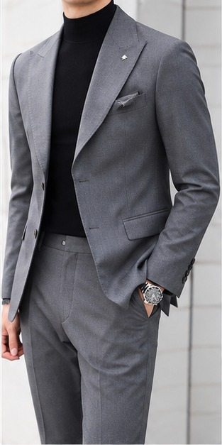
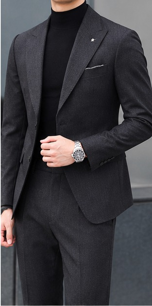
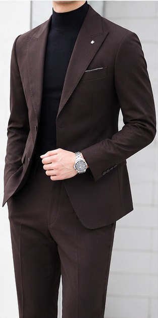
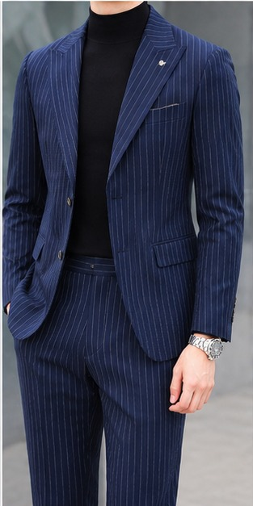
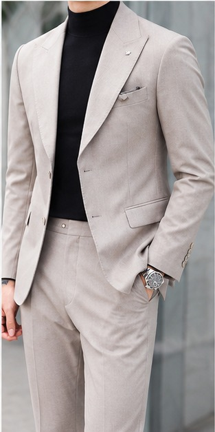
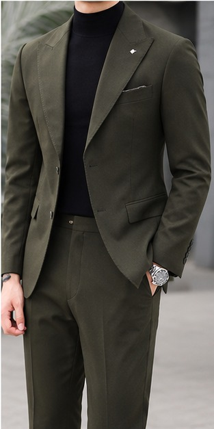
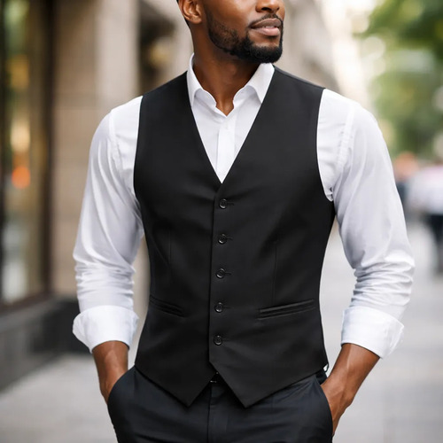

Slim Fit
Corte mais ajustado ao corpo, com visual moderno e "seco". É a modelagem mais procurada.
Ajustado modernoDo corte à bainha, buscamos a perfeição em cada ponto.
Entendemos quem é o cliente antes de pegar o tecido.
Vestir-se bem é um direito, não um privilégio de poucos.
Coleção
Antes de escolher a cor, vale entender o que torna cada terno único. Abaixo, as modelagens, os modelos e os tecidos com que trabalhamos — e, ao final, nossas peças como exemplos de cor.
Corte mais ajustado ao corpo, com visual moderno e "seco". É a modelagem mais procurada.
Ajustado modernoAinda mais justo que o slim, colado ao corpo e com pegada fashion.
Super justoModelagem tradicional e confortável, menos apertada. Também chamada de "Classic".
Solto e clássicoCorte pensado para tamanhos maiores, priorizando conforto e mobilidade.
Conforto amploCorte reto e confortável, visual clássico e formal. Ideal para trabalho e cerimônias.
Mais ajustado ao corpo, com paletó acinturado e calça afunilada. Moderno e elegante.
Extremamente justo, de pegada fashion e jovem. Comum em eventos modernos.
O mais formal: lapela em cetim ou seda e gravata borboleta. Casamentos de gala e formaturas.
Corte elegante e mais justo, ombros marcados e cintura ajustada. Sofisticado.
Estrutura mais rígida, ombros fortes e caimento elegante. Clássico e refinado.
Mais amplo e confortável, menos estruturado. Muito usado no ambiente corporativo.
Paletó + calça. O conjunto mais comum no dia a dia.
Paletó + calça + colete. Mais sofisticado e social.
Mais casual; combina com calça diferente ou jeans. Não exige conjunto.
Mistura de poliéster e viscose. Bom caimento e ótimo custo-benefício para o dia a dia.
Mais resistente e menos amassado. Comum nas linhas slim e executivas.
Toque macio e confortável, deixa a peça mais agradável de vestir.
Presente em modelos "stretch". Melhora a mobilidade e o conforto.
Leve e prática, usada em ternos mais leves e de entrada.
Sofisticado e fashion, reservado a linhas e ocasiões especiais.
O tecido nobre da alfaiataria: caimento impecável e respirabilidade superior. Ideal para casamentos e uso frequente.
Para algo mais refinado — casamentos ou uso frequente — recomendamos tecidos com maior teor de viscose, elastano moderado ou lã fria. Para o trabalho diário, a poliviscose entrega excelente custo-benefício.









Vamos começar
Preencha seus dados e medidas. Entraremos em contato para alinhar cada detalhe.
Missão · Visão · Valores
A Fino Ajuste nasceu da paixão pela alfaiataria clássica combinada com a precisão moderna — uma experiência artesanal única, do primeiro contato à última costura.
Vestir cada cliente com excelência e personalidade, criando ternos sob medida que expressam identidade, transmitem confiança e elevam a autoestima — por meio de uma experiência artesanal única, do primeiro contato à última costura.
Ser reconhecida até 2030 como a alfaiataria sob medida de referência no Brasil, sinônimo de elegância contemporânea, precisão artesanal e atendimento personalizado — presente nas ocasiões mais importantes da vida dos nossos clientes.
Cada detalhe importa. Do corte à bainha, buscamos a perfeição em cada ponto.
Entendemos quem é o cliente antes de pegar o tecido — o terno começa no diálogo.
Cada peça é única — feita para uma pessoa, não para um mercado.
Honramos a alfaiataria clássica, mas acompanhamos o homem contemporâneo.
Transparência nos prazos, materiais e preços — sempre a roupa que foi prometida.
Acreditamos que vestir-se bem é um direito, não um privilégio de poucos.
Área restrita
Acesso exclusivo da equipe Fino Ajuste.